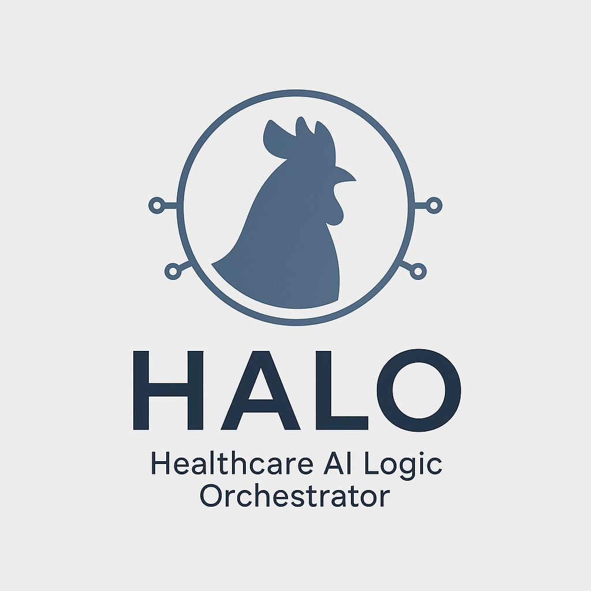

Welcome to HALOBridge.ai
Unifying intelligent automation, document AI, and enterprise transformation
Powered by the HALO AI Stack
HealthCare AL Logic Orchestrator
🚀 Where We're Headed
HALOBridge is evolving into a full-stack AI platform for modern enterprises — bridging the gap between structured data, unstructured documents, and smart automation.
🔮 On the horizon:
- 🩺 FHIR-native medical record AI with audit trail & patient transparency
- 🔠Zero-trust compliance monitoring and auto-redaction pipelines
- 📊 Real-time SQL + semantic intelligence across your entire data stack
- 🤠Secure hybrid workflows that connect human insight with AI execution
From finance to healthcare, HALOBridge is built to adapt, scale, and deliver.
See the Full Vision